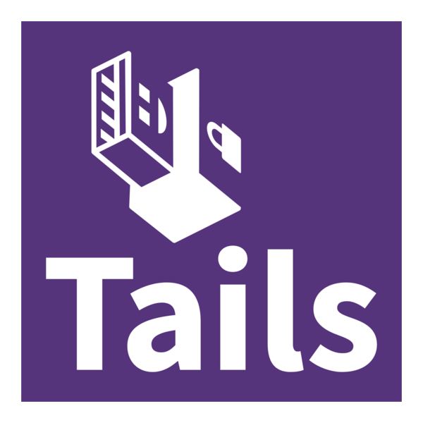

TailsOS:

Sinceramente eu amo essa distro Linux pelo simples motivo de não salvar no HD ou SSD, sim
essa distro é focada em privacidade, uma vez que ela é conectada na rede tor e ainda não salva no HD
e é baseada em Debian.
Informações principais:
Gerenciador de pacotes: Ele usa APT, mas ele não é capaz de instalar nada, uma vez que o root está desativado.
Filosofia: Privacidade e anonimato.
Modelo: live
Dificuldade: Fácil de usar (Ele só serve para fazer tarefas de forma anônima, tipo mandar email, pesquisar e etc.)
Vantagens:
1) Privacidade e anônimato.
2) Não deixa rastros no computador (No caso nem salva no HD ou SSD).
3) Baseado em Debian stable.
4) Fácil de usar como Live USB.
Desvantagens:
1) Infelizmente não é feito para uso diário.
2) Instalação limitada.
3) Dependência da rede tor.
4) Hardware específico pode ser meio problemático com a distro.